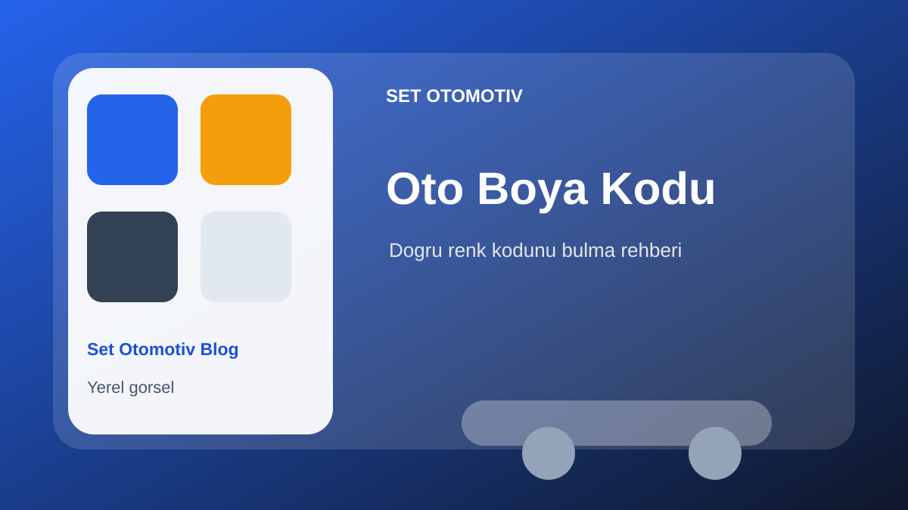
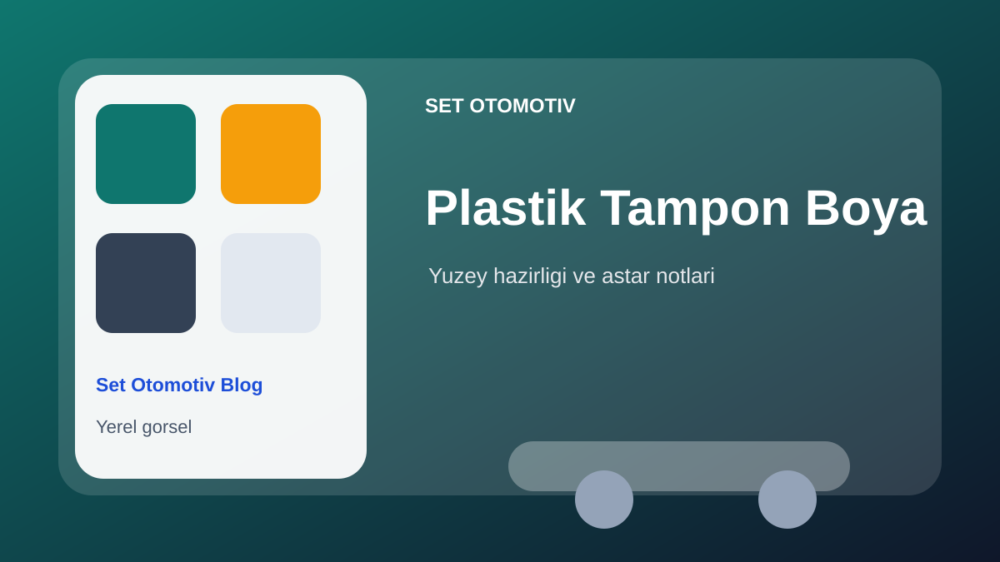
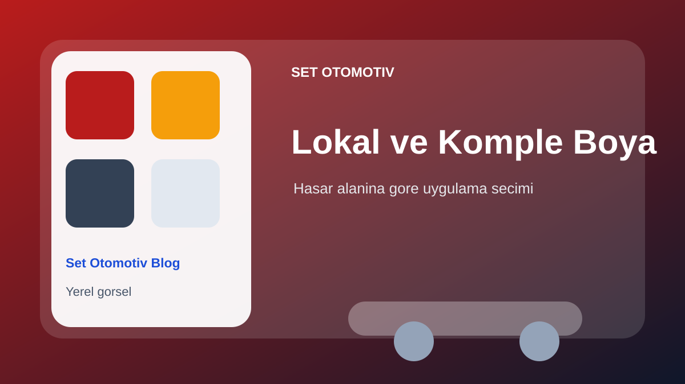

Automotive paint preparation: how to prevent surface defects
A practical guide to preparation issues that can lead to rust, bleeding, sanding marks, blistering, pinholes and poor adhesion.
Read MoreWe collected common customer questions and important paint industry news in a practical, business-focused format.
The year color series is now shown as a dedicated block. Each year links to its own detail page, from Radiant Red to Solar Boost.
A practical guide to preparation issues that can lead to rust, bleeding, sanding marks, blistering, pinholes and poor adhesion.
Read More Industry News
Industry NewsA practical overview of Axalta global automotive colors from 2015 Radiant Red to 2026 Solar Boost.
Read More Industry News
Industry NewsA practical Set Otomotiv note on Solar Boost, automotive color trends and paint application sensitivity.
Read More Industry News
Industry NewsA practical Set Otomotiv note on Evergreen Sprint, automotive color trends and paint application sensitivity.
Read More Industry News
Industry NewsA practical Set Otomotiv note on Starry Night, automotive color trends and paint application sensitivity.
Read More Industry News
Industry NewsA practical Set Otomotiv note on Techno Blue, automotive color trends and paint application sensitivity.
Read More Industry News
Industry NewsA practical Set Otomotiv note on Royal Magenta, automotive color trends and paint application sensitivity.
Read More Industry News
Industry NewsA practical Set Otomotiv note on ElectroLight, automotive color trends and paint application sensitivity.
Read More Industry News
Industry NewsA practical Set Otomotiv note on Sea Glass, automotive color trends and paint application sensitivity.
Read More Industry News
Industry NewsA practical Set Otomotiv note on Sahara, automotive color trends and paint application sensitivity.
Read More Industry News
Industry NewsA practical Set Otomotiv note on StarLite, automotive color trends and paint application sensitivity.
Read More Industry News
Industry NewsA practical Set Otomotiv note on Gallant Gray, automotive color trends and paint application sensitivity.
Read More Industry News
Industry NewsA practical Set Otomotiv note on Brilliant Blue, automotive color trends and paint application sensitivity.
Read MoreIndustry NewsA practical Set Otomotiv note on Radiant Red, automotive color trends and paint application sensitivity.
Read More Industry News
Industry NewsA practical summary of Axalta 68th Global Automotive Color Popularity Report from a paint and customer preference perspective.
Read More Industry News
Industry NewsA Set Otomotiv summary of the gray, white, black and silver trends in Axalta 67th Global Automotive Color Popularity Report.
Read More
Auto PaintA simple guide to the usual label locations and why paint code verification matters before color matching.
Read More Color Guide
Color GuideA practical overview of common color systems used in paint, industry, design and surface selection.
Read More
ApplicationCleaning, sanding and adhesion primer notes for bumpers and exterior plastic parts.
Read More Industrial Paint
Industrial PaintA short guide to primer selection for metal, machinery, profiles and industrial surfaces.
Read More Spare Parts
Spare PartsThe same model can use different parts depending on year, engine and equipment. VIN helps reduce mistakes.
Read More
Auto PaintA practical explanation of when local paint repair may be enough and when full painting can make more sense.
Read MoreTell us which paint, part or catalog topic you want to see; we can add it as a new guide.